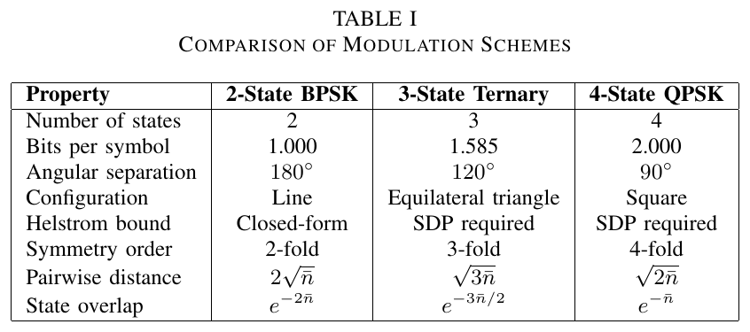
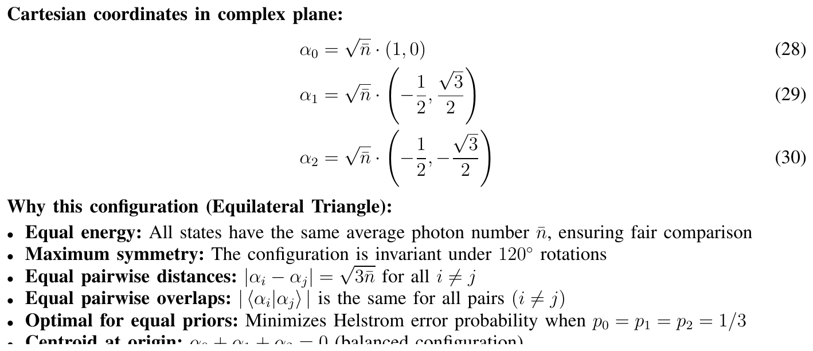
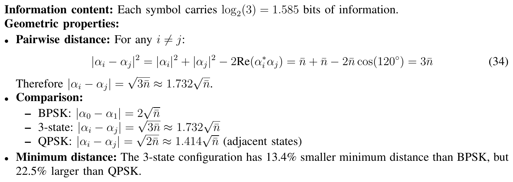
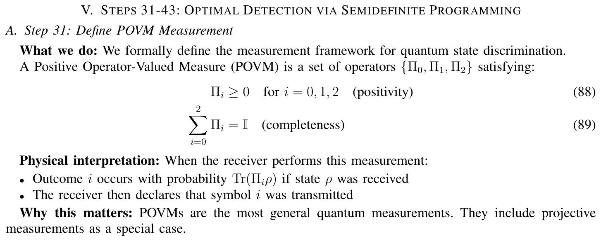
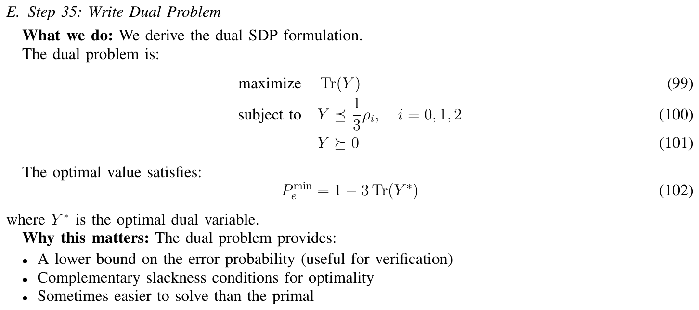
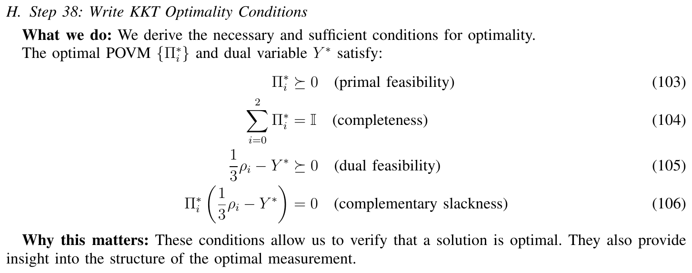
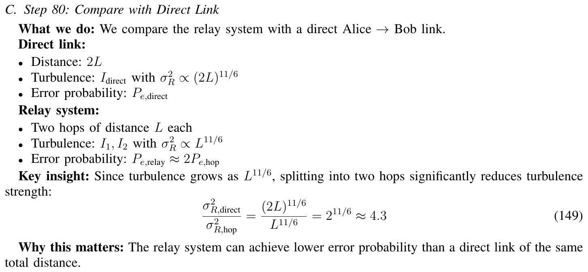
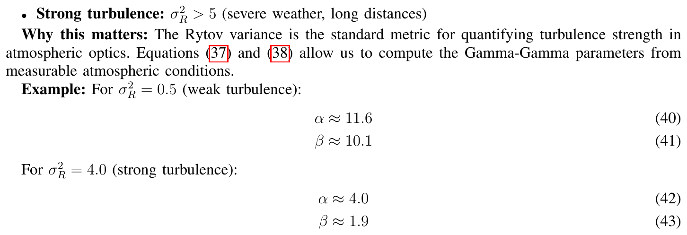
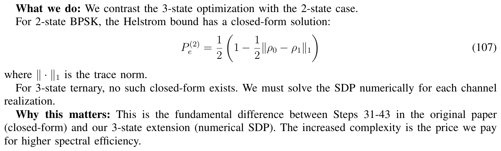

Module 05 · Điều chế ba trạng thái (ternary): Gram, đối xứng vòng và square-root measurement (SRM)
Từ BPSK lên ba trạng thái coherent: công thức đóng, kiểm chứng số và các bẫy trong tài liệu
- Dựng Gram matrix và tính \(P_e\) của square-root measurement (SRM) cho ba trạng thái
- Giải thích vì sao đối xứng vòng làm PGM trùng Helstrom
- Phát hiện và sửa các con số sai trong tài liệu bằng cách tính lại
📚 Tài liệu nguồn của module (đã xác minh bằng nội dung từng file)
| File trong kho | Bài báo (đã xác minh bằng nội dung) | Trang | Trạng thái | Liên kết | Đã dùng vào module |
|---|---|---|---|---|---|
| Detail 3 State Implementation - 82 Steps.pdf | Detailed 82-Step Derivation: 3-State Ternary Quantum Free-Space Optical Communication Through Atmospheric Turbulence Quantum AI Lab · 2026 · Báo cáo nội bộ (IEEEtran) | 28 | Đã đọc, khớp tên bài | Chưa có liên kết công khai (lấy file ở thư mục chung của nhóm) | Toàn bộ: chòm sao, kênh, SDP, KKT, relay. 12 hình cắt từ trang 2, 5, 7, 14-16, 26 |
| Detail 3 State Implementation - 82 Steps.tex | Mã nguồn LaTeX của bản suy dẫn 82 bước Quantum AI Lab · 2026 · LaTeX (1831 dòng) | Đã đọc, khớp tên bài | Chưa có liên kết công khai (lấy file ở thư mục chung của nhóm) | Đối chiếu cấu trúc 82 bước với PDF | |
| Detail_3_State_Implementation_82_Steps.md | Detailed 3-State Implementation: 82-Step Analysis Quantum AI Lab · 2026 · Báo cáo song ngữ (md) | 854 dòng | Đã đọc, khớp tên bài | Chưa có liên kết công khai (lấy file ở thư mục chung của nhóm) | Bảng 82 bước BPSK so với ba trạng thái; công thức khớp; mã SDP, SRM |
| Test 3 state.md | Feasibility Analysis of 3-State Coherent Modulation for Quantum FSO Relay Systems Quantum AI Lab · 2026 · Báo cáo song ngữ (md) | 2914 dòng | Đọc một phần (sách dài) | Chưa có liên kết công khai (lấy file ở thư mục chung của nhóm) | Đọc mục 1-5, 7-8, 10-11: lập luận tối ưu, bảng P_e (đã tính lại và phát hiện lệch) |
| CLOSED_FORM_APPROXIMATIONS_3STATE.md | Closed-Form Approximations for 3-State Ternary Modulation Quantum AI Lab · 2026 · Ghi chú (md), "dự kiến" | 138 dòng | Đã đọc, khớp tên bài | Chưa có liên kết công khai (lấy file ở thư mục chung của nhóm) | Năm phương pháp xấp xỉ, đều đánh dấu chưa kiểm chứng; "Chernoff dưới" bị bác bằng số |
| FINAL_SUMMARY_3STATE_PROJECT.md | Final Summary: 3-State Ternary Quantum Communication Quantum AI Lab · 2026 · Tóm tắt (md) | 183 dòng | Đã đọc, khớp tên bài | Chưa có liên kết công khai (lấy file ở thư mục chung của nhóm) | Bảng chỉ số BPSK/ternary, thời gian SDP 63,75 ms |
| SUMMARY_3_STATE_IMPLEMENTATION.md | Summary: 3-State Ternary Quantum FSO Communication, 82 Steps Quantum AI Lab · 2026 · Tóm tắt (md) | 140 dòng | Đọc một phần (sách dài) | Chưa có liên kết công khai (lấy file ở thư mục chung của nhóm) | Văn bản bị hỏng ký tự ở nhiều đoạn; chỉ dùng bảng so sánh BPSK/ternary/QPSK, đối chiếu với PDF |
Bài giảng (slide)
Dùng phím ← → hoặc nút bấm; nút ⛶ để trình chiếu toàn màn hình.
Từ BPSK hai trạng thái đến điều chế ba trạng thái

Quantum AI Lab, bản suy dẫn 82 bước ba trạng thái (2026), Bảng I, tr. 2
- \(M\)số trạng thái trong bảng chữ cái
- \(\eta\)bit mang bởi mỗi ký hiệu
Tăng so với BPSK: \(\log_2 3-1\approx 58{,}5\%\). Cái giá là khoảng cách giữa các trạng thái giảm từ \(2\sqrt{\bar n}\) xuống \(\sqrt{3\bar n}\).
Chòm sao tam giác đều của ba trạng thái coherent

Quantum AI Lab, bản suy dẫn 82 bước ba trạng thái (2026), Pt. (28)-(30), tr. 5
- \(\bar n=|\alpha_k|^2\)số photon trung bình mỗi ký hiệu
- \(\omega\)căn bậc ba của đơn vị
Tâm đồ thị ở gốc: \(\alpha_0+\alpha_1+\alpha_2=\sqrt{\bar n}(1+\omega+\omega^2)=0\). Mọi cặp cách nhau \(120^\circ\).
Khoảng cách theo cặp của chòm sao ba trạng thái

Quantum AI Lab, bản suy dẫn 82 bước ba trạng thái (2026), Pt. (34), tr. 5
| Chòm sao | \(d\) | \(d^2\) | \(|\langle\alpha_i|\alpha_j\rangle|^2\) |
|---|---|---|---|
| BPSK (hai trạng thái) | \(2\sqrt{\bar n}\) | \(4\bar n\) | \(e^{-4\bar n}\) |
| Ba trạng thái | \(\sqrt{3\bar n}\) | \(3\bar n\) | \(e^{-3\bar n}\) |
| QPSK (kề nhau) | \(\sqrt{2\bar n}\) | \(2\bar n\) | \(e^{-2\bar n}\) |
Tỉ số khoảng cách so với BPSK: \(\sqrt3/2\approx0{,}866\) (nhỏ hơn \(13{,}4\%\)); so với QPSK: \(\sqrt{3/2}\approx1{,}225\).
Trạng thái coherent và phân bố photon Poisson
- \(|n\rangle\)trạng thái có đúng \(n\) photon
- \(\alpha\in\mathbb C\)biên độ phức: mô-đun là biên độ, argument là pha
| n | 0 | 1 | 2 | 3 | 4 | 5 | 6 |
|---|---|---|---|---|---|---|---|
| \(P(n)\), \(\bar n=2\) | 0,1353 | 0,2707 | 0,2707 | 0,1804 | 0,0902 | 0,0361 | 0,0120 |
Độ chồng lấn giữa hai trạng thái coherent
Với ba trạng thái: \(g=\langle\alpha_0|\alpha_1\rangle=e^{-\bar n(1-\omega)}=e^{-3\bar n/2}\,e^{\,i\sqrt3\,\bar n/2}\), tức \(|g|=e^{-3\bar n/2}\) và \(|g|^2=e^{-3\bar n}\).
| \(\bar n\) | \(|\langle\alpha|-\alpha\rangle|^2\) (BPSK) | \(|g|^2\) (ba trạng thái) | \(|\langle\alpha_i|\alpha_j\rangle|^2\) (QPSK) |
|---|---|---|---|
| 0,50 | 1,35×10−1 | 2,23×10−1 | 3,68×10−1 |
| 1,00 | 1,83×10−2 | 4,98×10−2 | 1,35×10−1 |
| 2,00 | 3,35×10−4 | 2,48×10−3 | 1,83×10−2 |
| 3,00 | 6,14×10−6 | 1,23×10−4 | 2,48×10−3 |
Gram matrix của ba trạng thái
- \(g\)\(\langle\alpha_0|\alpha_1\rangle\), một số phức
- \(\bar g\)liên hợp phức của \(g\)
Ví dụ \(\bar n=1\): \(|g|=0{,}223\), \(\arg g=49{,}6^\circ\). Ma trận chỉ phụ thuộc \(k-j \bmod 3\), nên ba hàng là hoán vị vòng của nhau.
Đối xứng vòng và toán tử quay trong không gian Fock
- \(\hat n=\hat a^\dagger\hat a\)toán tử số photon
- \(U^3=\mathbb 1\)vì \(e^{2\pi i\hat n}=\mathbb 1\) khi \(n\) nguyên
Tập trạng thái có dạng như vậy gọi là geometrically uniform (geometrically uniform): một nhóm đối xứng sinh ra mọi trạng thái từ một trạng thái gốc.
Kênh nhiễu loạn Gamma-Gamma cộng nhiễu phức
- \(I\)hệ số cường độ ngẫu nhiên (fading do nhiễu loạn)
- \(\epsilon\)nhiễu cộng phức
\(\mathbb E[I]=1\), \(\operatorname{Var}(I)=\tfrac1\alpha+\tfrac1\beta+\tfrac1{\alpha\beta}\). Kênh giống hệt BPSK; chỉ chòm sao thay đổi.
Bài toán phân biệt tối ưu qua phép đo POVM

Quantum AI Lab, bản suy dẫn 82 bước ba trạng thái (2026), Pt. (88)-(89), tr. 14
- \(p_i=1/M\)xác suất tiên nghiệm đều
- \(\Pi_i\)phần tử đo: kết quả \(i\) ứng với "ký hiệu \(i\)"
Đối ngẫu: chứng chỉ tối ưu cho phép đo

Quantum AI Lab, bản suy dẫn 82 bước ba trạng thái (2026), Pt. (99)-(102), tr. 15
- \(Y\)biến đối ngẫu Hermite
Mọi \(Y\) khả thi cho \(\mathrm{Tr}\,Y\ge P_c\), tức một cận dưới \(P_e\ge1-\mathrm{Tr}\,Y\). Hình trích viết \(\max\mathrm{Tr}Y\), \(Y\preceq\tfrac13\rho_i\) và \(1-3\mathrm{Tr}Y^*\); chiều bất đẳng thức đó bị ngược so với đối ngẫu của bài toán cực đại \(P_c\), nên phải đọc theo dạng bên trên.
Điều kiện cần và đủ của Holevo cho phép đo tối ưu

Quantum AI Lab, bản suy dẫn 82 bước ba trạng thái (2026), Pt. (103)-(106), tr. 16
Khi đó \(\{\Pi_i\}\) tối ưu và \(P_c=\mathrm{Tr}\,Y\). Phần sau kiểm bằng số: với square-root measurement (SRM) ở \(\bar n=1\), trị riêng nhỏ nhất của \(Y-\tfrac13\rho_j\) là \(-5\times10^{-17}\), tức bằng 0 trong sai số làm tròn.
Square-root measurement (SRM/PGM) cho tập trạng thái thuần
- \(G^{-1/2}\)căn bậc hai nghịch đảo của Gram matrix
- \(|\mu_i\rangle\)vectơ đo, gần với \(|\alpha_i\rangle\) nhất có thể mà vẫn trực chuẩn
Ba vectơ \(|\mu_i\rangle\) trực chuẩn nhau (tích trong \(\delta_{ij}\)), nên đo chúng là phép chiếu thật sự, không cần mở rộng không gian.
Công thức P_e của PGM qua trị riêng của Gram matrix
- \(\lambda_m\)trị riêng thực, không âm của \(G\)
- \(\omega=e^{2\pi i/M}\)căn đơn vị bậc \(M\)
Kiểm tra: \(\sum_m\lambda_m=\mathrm{Tr}\,G=M\). Nếu \(g=0\) thì \(\lambda_m=1\) và \(P_e=0\).
Closed form của ba trị riêng và tính tối ưu của PGM
- \(e^{-3\bar n/2}\)mô-đun \(|g|\)
- \(\tfrac{\sqrt3}{2}\bar n\)argument của \(g\), tính bằng radian
Áp dụng cho trạng thái geometrically uniform với xác suất tiên nghiệm đều.
Lý do: \(Y\) giao hoán với \(U\) nên \(Y-p\rho_j\succeq0\) với \(j=0\) kéo theo mọi \(j\). Ở \(\bar n=1\): \(\lambda=(0{,}5610, 1{,}150, 1{,}289)\), tổng \(=3\).
Ví dụ từng bước: P_e của ba trạng thái tại n̄ = 1
- Chồng lấn: \(g=e^{-1(1-\omega)}\), \(|g|=e^{-1.5}=0{,}223\), \(\arg g=\tfrac{\sqrt3}{2}=0{,}866\) rad.
- Trị riêng: \(\lambda_m=1+2|g|\cos(0{,}866+2\pi m/3)\) cho \((1{,}289, 0{,}5610, 1{,}150)\), tổng \(=3{,}00\).
- Căn: \(\sqrt{\lambda_m}=(1{,}135, 0{,}7490, 1{,}072)\), tổng \(=2{,}957\).
- \(P_c=\tfrac19(2{,}957)^2=0{,}9714\), nên \(P_e=0{,}02864\).
Bảng P_e theo n̄: chính xác, cận hợp và tiệm cận
| \(\bar n\) | \(P_e^{\text{BPSK}}\) | \(P_e^{(3)}\) (chính xác) | cận hợp | \(\tfrac12e^{-3\bar n}\) | tỉ số |
|---|---|---|---|---|---|
| 0,5 | 0,0351 | 0,131 | 0,178 | 0,112 | 3,74 |
| 1,0 | 4,60×10−3 | 0,0286 | 0,0378 | 0,0249 | 6,23 |
| 2,0 | 8,39×10−5 | 1,23×10−3 | 1,86×10−3 | 1,24×10−3 | 14,6 |
| 3,0 | 1,54×10−6 | 6,17×10−5 | 9,26×10−5 | 6,17×10−5 | 40,2 |
| 4,0 | 2,81×10−8 | 3,07×10−6 | 4,61×10−6 | 3,07×10−6 | 109 |
| 5,0 | 5,15×10−10 | 1,53×10−7 | 2,29×10−7 | 1,53×10−7 | 297 |
Tại \(\bar n=4\): \(P_e^{(3)}/(\tfrac12e^{-12})=1{,}001\). Cận hợp \(3\cdot\tfrac12(1-\sqrt{1-e^{-3\bar n}})\) lớn hơn đáp án chính xác khoảng \(1{,}5\) lần ở \(\bar n\ge3\).
Square-root measurement (SRM) trong không gian Fock khớp công thức Gram
Dựng \(\rho_k=|\alpha_k\rangle\langle\alpha_k|\) trong không gian Fock \(N=40\) chiều, tính square-root measurement (SRM) \(\Pi_k=\rho^{-1/2}p\rho_k\rho^{-1/2}\), \(\rho=\sum p\rho_k\).
| \(\bar n\) | P_e (Gram) | P_e (Fock) | \(\min\mathrm{eig}(Y-\tfrac13\rho_j)\) |
|---|---|---|---|
| 0,50 | 0,13098 | 0,13098 | -2,1×10−16 |
| 1,00 | 0,028641 | 0,028641 | -5,2×10−17 |
| 2,00 | 1,2275×10−3 | 1,2275×10−3 | -1,1×10−16 |
| 3,00 | 6,1691×10−5 | 6,1691×10−5 | -2,7×10−16 |
Hai cách tính khớp đến 8 chữ số, và chứng chỉ Holevo thoả đến sai số làm tròn: square-root measurement (SRM) là phép đo Helstrom.
So sánh công suất ở cùng xác suất lỗi 10^-6
| Hệ | \(\bar n\) cho \(P_e=10^{-6}\) | bit/ký hiệu | \(\bar n\) mỗi bit |
|---|---|---|---|
| BPSK | 3,107 | 1 | 3,107 |
| Ba trạng thái | 4,374 | 1,585 | 2,760 |
Chọn số chiều Fock truncation cho ba ma trận mật độ
- \(N\)số chiều Fock giữ lại
- \(\varepsilon_{\text{trunc}}\)xác suất ngoài vùng cắt
| \(\bar n\) | \(N=3\bar n+10\) | \(\varepsilon_{\text{trunc}}\) |
|---|---|---|
| 2 | 16 | 4,80×10−10 |
| 5 | 25 | 1,60×10−10 |
| 10 | 40 | 7,34×10−13 |
Với ba trạng thái cùng \(\bar n\), cả ba có cùng đuôi Poisson nên một \(N\) dùng chung cho mọi \(\rho_k\). Số biến SDP: \(3N^2\); với \(N=25\) là \(1875\), khớp Bước 36.
Chặng chuyển tiếp và tỉ số Rytov variance

Quantum AI Lab, bản suy dẫn 82 bước ba trạng thái (2026), Pt. (148)-(151), tr. 26
Với \(\bar n=2\), hai chặng giống nhau: \(P_e=1{,}23\times10^{-3}\), relay \(=2{,}453\times10^{-3}\) (xấp xỉ cộng cho \(2{,}455\times10^{-3}\)).
Công thức khớp 0,4·exp(-1,5n̄) sai bậc mũ
| \(\bar n\) | \(0{,}4e^{-1.5\bar n}\) | chính xác | tỉ số |
|---|---|---|---|
| 1 | 0,0893 | 0,0286 | 3,12 |
| 2 | 0,0199 | 1,23×10−3 | 16,2 |
| 3 | 4,44×10−3 | 6,17×10−5 | 72,0 |
| 4 | 9,92×10−4 | 3,07×10−6 | 323 |
| 5 | 2,21×10−4 | 1,53×10−7 | 1447 |
Ví dụ tham số Gamma-Gamma không khớp công thức

Quantum AI Lab, bản suy dẫn 82 bước ba trạng thái (2026), Pt. (40)-(43), tr. 7
| \(\sigma_R^2\) | bản suy dẫn | tính lại |
|---|---|---|
| 0,5 | \(11,6;\ 10,1\) | \(5{,}98;\ 4{,}40\) |
| 4,0 | \(4,0;\ 1,9\) | \(4{,}34;\ 1{,}31\) |
Cận hợp theo cặp và "cận Chernoff" bị gọi sai

Quantum AI Lab, bản suy dẫn 82 bước ba trạng thái (2026), Pt. (107), tr. 16
Tài liệu nhóm gọi \(\tfrac12e^{-3\bar n/4}\) là "cận Chernoff dưới", nhưng tại \(\bar n=2\) nó bằng \(0{,}112\), lớn gấp \(\approx90{,}9\) lần \(P_e\) chính xác, nên không thể là cận dưới. Cận hợp \(2P^{\text{pair}}\) mới hợp lệ: \(1{,}24\times10^{-3}\).
Mở rộng từ BPSK lên M trạng thái PSK đối xứng vòng
| \(M\) | bit/ký hiệu | \(P_e(\bar n{=}1)\) | \(P_e(\bar n{=}3)\) | \(\bar n\) cho \(10^{-6}\) | \(\bar n\) mỗi bit |
|---|---|---|---|---|---|
| 2 | 1,000 | 4,60×10−3 | 1,54×10−6 | 3,11 | 3,11 |
| 3 | 1,585 | 0,0286 | 6,17×10−5 | 4,37 | 2,76 |
| 4 | 2,000 | 0,0924 | 1,24×10−3 | 6,56 | 3,28 |
| 6 | 2,585 | 0,286 | 0,0264 | 13,12 | 5,08 |
| 8 | 3,000 | 0,449 | 0,104 | 22,40 | 7,47 |
Mở rộng sang kênh nhiễu loạn: trạng thái hỗn hợp vẫn đối xứng quay
- \(\rho_0\)trạng thái trung bình theo \(I\) và \(\epsilon\): hỗn hợp, không còn thuần
Nhiễu phức đối xứng tròn và hệ số cường độ \(I\) đều giữ nguyên đối xứng quay, nên mỗi \(\rho_k\) vẫn là bản xoay của \(\rho_0\). Biến số giảm từ \(3N^2\) xuống \(N^2\). Nhưng với trạng thái hỗn hợp, square-root measurement (SRM) nói chung không còn tối ưu.
Các giả định ngầm và lỗi sao chép trong tài liệu
- Không đồng nhất giả định: \(P_e\) ở các bảng trên là cho kênh thuần, không nhiễu loạn, không nhiễu cộng (\(I=1,\epsilon=0\)). Kết quả của nhóm cho kênh Gamma-Gamma cần lấy trung bình \(\mathbb E_{I,\epsilon}\).
- Bước 28-29 ghi "bốn trạng thái": chữ "four" còn sót từ bản QPSK; với ba trạng thái đọc là ba.
- Xác suất tiên nghiệm không đều: PGM với \(p_i\) khác nhau không còn tối ưu; phải giải SDP.
Dòng thời gian từ Helstrom bound đến ba trạng thái của nhóm
Năm lấy từ danh mục tham khảo của các tài liệu nhóm (Test 3 state.md, mục 11; CLOSED_FORM_APPROXIMATIONS_3STATE.md). Nét đứt: ảnh hưởng ý tưởng; nét liền: phụ thuộc trực tiếp.
Chọn M theo ngân sách photon của tuyến
| \(M\) | bit/ký hiệu | \(\bar n\) cho \(10^{-6}\) | \(\bar n\) mỗi bit | \(\bar n\) cho \(10^{-9}\) |
|---|---|---|---|---|
| 2 | 1,000 | 3,11 | 3,11 | 4,83 |
| 3 | 1,585 | 4,37 | 2,76 | 6,68 |
| 4 | 2,000 | 6,56 | 3,28 | 10,02 |
| 8 | 3,000 | 22,40 | 7,47 | 34,19 |
- \(P\)công suất thu
- \(T\)thời gian một ký hiệu
Ví dụ (minh hoạ): ở \(\lambda=1550\) nm, \(\hbar\omega=1{,}28\times10^{-19}\) J; để có \(\bar n=4{,}37\) trong \(T=1\) ns cần \(P\approx5{,}61\times10^{-10}\) W.
Khoảng cách từ máy thu thực dụng đến giới hạn Helstrom
| \(\bar n\) | heterodyne, quyết định theo cung \(120^\circ\) | Helstrom (PGM) | tỉ số |
|---|---|---|---|
| 1 | 0,183 | 0,0286 | 6,40 |
| 2 | 0,0738 | 1,23×10−3 | 60,2 |
| 3 | 0,0312 | 6,17×10−5 | 506 |
| 4 | 0,0135 | 3,07×10−6 | 4389 |
Hình thức này có sẵn thiết bị, nhưng lỗi cao hơn giới hạn lượng tử từ vài lần (ở \(\bar n=1\)) đến hàng nghìn lần (ở \(\bar n=4\)). Khoảng cách đó là động lực cho các máy thu khác trong các module sau.
Công thức đóng làm chuẩn cho mạng surrogate
Tài liệu nhóm báo cáo (ba trạng thái): SDP \(63{,}75\) ms/mẫu so với closed form \(2{,}5\) ms/mẫu, tỉ số \(=25{,}5\). Với hai trạng thái (kết quả cuối của nhóm): SDP \(85{,}24\) ms so với surrogate \(0{,}118\) ms, tỉ số \(=722\).
Với kênh sạch, công thức trên làm nhãn đúng để kiểm tra mạng surrogate cho ba trạng thái, rẻ hơn mọi SDP. Với kênh nhiễu loạn thì vẫn cần nhãn từ bài toán SDP rút gọn.
Bản đồ 82 bước: bước nào đổi khi đi từ hai lên ba trạng thái
| Bước | Nội dung | So với BPSK |
|---|---|---|
| 1-5 | Nền tảng trạng thái coherent, chòm sao | Đổi |
| 6-13 | Kênh Gamma-Gamma và nhiễu | Giữ nguyên |
| 14-30 | Toán tử mật độ, trạng thái nhận | Mở rộng ba trạng thái |
| 31-43 | Phát hiện tối ưu: SDP | Đổi: closed form thành SDP/PGM |
| 44-60 | Phần tử ma trận trong Fock | Thêm ma trận thứ ba |
| 61-77 | Lấy trung bình nhiễu và nhiễu loạn | Giữ cấu trúc |
| 78-82 | Relay và hiệu suất phổ | Đổi: \(\log_23\) bit |
Tổng kết: ba trạng thái so với hai và bốn
| Tiêu chí | BPSK | Ba trạng thái | QPSK |
|---|---|---|---|
| Số trạng thái | 2 | 3 | 4 |
| bit/ký hiệu | 1 | 1,585 | 2 |
| khoảng cách | \(2\sqrt{\bar n}\) | \(\sqrt{3\bar n}\) | \(\sqrt{2\bar n}\) |
| \(P_e(\bar n{=}2)\) | 8,39×10−5 | 1,23×10−3 | 9,55×10−3 |
| Closed form (kênh sạch) | có | có (Gram) | có (Gram) |
Đối xứng vòng biến một bài toán SDP thành phép chéo hoá Fourier; PGM tối ưu cho trạng thái thuần; mọi con số trong tài liệu phải được tính lại trước khi trích.
Nội dung chi tiết
Nói nôm na, rồi kỹ thuật
Hình dung ba chiếc đèn pin cùng độ sáng nhưng lệch pha nhau \(120^\circ\). Người nhận chỉ thấy ánh sáng mờ nhoè và phải đoán đèn nào. Vì ánh sáng lượng tử có nhiễu bẩm sinh, hai đèn bất kỳ không bao giờ hoàn toàn khác nhau: độ chồng lấn \(|g|^2=e^{-3\bar n}\) khác 0. Phép đo tốt nhất xoay đều ba khả năng thành ba hướng vuông góc, rồi nhìn xem ánh sáng gần hướng nào.
Bối cảnh lý thuyết và lịch sử
Phân biệt tối ưu hai trạng thái do Helstrom đặt nền (1976). Với nhiều trạng thái không có công thức tổng quát; Holevo (1973) đưa ra điều kiện cần và đủ, còn Hausladen và Wootters (1994) đặt tên square-root measurement (SRM). Eldar và Forney (2001) chỉ ra PGM tối ưu cho tập trạng thái geometrically uniform. Nhóm của chúng ta áp dụng điều đó cho chòm sao ba trạng thái qua kênh Gamma-Gamma (bản suy dẫn 82 bước, tháng 1/2026).
Ví dụ có lời giải từng bước
- Biên độ chồng lấn \(|g|=e^{-3\bar n/2}=0{,}2231\).
- Ba trị riêng \((1{,}289, 0{,}5610, 1{,}150)\), tổng \(3\).
- Tổng căn \(2{,}957\).
- \(P_e=1-(2{,}957)^2/9=0{,}02864\).
- Kết luận: khoảng 2,9% ký hiệu bị đoán sai dù đã đo tối ưu.
- Mục tiêu \(P_e=10^{-6}\): BPSK cần \(\bar n=3{,}11\), ba trạng thái cần \(\bar n=4{,}37\).
- Ký hiệu 1 ns tại 1550 nm: \(\hbar\omega=1{,}28\times10^{-19}\) J, nên \(P=\bar n\hbar\omega/T\).
- BPSK: \(P=3{,}98\times10^{-10}\) W; ba trạng thái: \(P=5{,}61\times10^{-10}\) W.
- Cùng công suất, ba trạng thái tải \(1{,}585\) bit mỗi ký hiệu: tốc độ tăng \(58{,}5\%\), chi phí công suất \(+1{,}48\) dB.
- Ma trận kernel \(K_{jk}=\exp(-\gamma|x_j-x_k|^2)\) với ba tâm đều nhau trên vòng tròn cũng là ma trận circulant, giống \(G\) (\(\gamma=1\) ứng với \(|g|^2=e^{-|\alpha_j-\alpha_k|^2}\)).
- Với \(\bar n=1\): hàng đầu \((1;\ 0{,}0498;\ 0{,}0498)\) cho bình phương chồng lấn.
- Trị riêng của ma trận này cho biết ba lớp tách được đến đâu: trị riêng gần 1 nghĩa là các lớp gần trực giao.
- Ba pha lệch \(120^\circ\): \(1+\omega+\omega^2=0\), tổng ba điện áp bằng 0, giống tâm chòm sao ở gốc.
- Phép quay \(U\) tương ứng phép hoán vị pha vòng.
- Vì thế Gram matrix của ba pha chéo hoá bằng biến đổi Fourier ba điểm, như trong module này.
- \(\bar n=2\): \(N=3\bar n+10=16\).
- Đuôi Poisson \(P(n\ge16)=4{,}80\times10^{-10}\), nhỏ hơn \(10^{-3}\) rất xa.
- Biến SDP \(3N^2=768\); với \(N=25\): \(1875\).
- Mỗi chặng \(P_e=1{,}23\times10^{-3}\) (\(\bar n=2\)).
- \(P_{e,\text{relay}}=2P-P^2=2{,}453\times10^{-3}\).
- Tỉ số \(\sigma_R^2\) trực tiếp và một chặng: \(2^{11/6}=3{,}564\).
Case study: kiểm tra lại các con số trong tài liệu nhóm
| \(\bar n\) | BPSK tính lại | BPSK trong tài liệu | ba trạng thái tính lại | ba trạng thái trong tài liệu |
|---|---|---|---|---|
| 1 | 4,60×10−3 | 4.58e-3 | 0,0286 | 8.93e-2 |
| 2 | 8,39×10−5 | 6.74e-5 | 1,23×10−3 | 2.00e-2 |
| 3 | 1,54×10−6 | 1.52e-7 | 6,17×10−5 | 4.47e-3 |
| 4 | 2,81×10−8 | 4.54e-10 | 3,07×10−6 | 1.00e-3 |
| 5 | 5,15×10−10 | 1.52e-12 | 1,53×10−7 | 2.24e-4 |
Bảng trong tài liệu nhóm (Test 3 state.md mục 5.2) lấy từ các công thức khớp gần đúng. Cả hai cột tài liệu lệch so với giá trị chính xác. Mọi con số của module này đều chạy lại trong data/verify/m05_verify.py.
Bẫy khi làm bài
- Nhầm \(|g|\) với \(|g|^2\): \(P_e\) dùng \(|g|^2=e^{-3\bar n}\).
- Quên chia \(M^2\) trong \(P_c=\tfrac1{M^2}(\sum\sqrt{\lambda_m})^2\) (với \(M=3\) là chia \(9\), không phải \(3\)).
- Dùng cận hợp như giá trị chính xác: nó lớn hơn \(1{,}5\) lần ở \(\bar n\) lớn.
- Áp dụng PGM tối ưu cho trạng thái hỗn hợp hoặc xác suất không đều.
Từ nôm na đến phép tính
Nôm na: ba hướng gần nhau. Kỹ thuật: Gram matrix circulant. Bảng: ba trị riêng. Phép tính: \(P_e=1-\tfrac19(\sum\sqrt{\lambda_m})^2\).
Thực hành tương tác
Tự kiểm tra nhanh
Luyện tập sâu
Mở ngân hàng 46 câu trắc nghiệm và 5 bài viết code →
Tài liệu tham khảo
- C. W. Helstrom, Quantum Detection and Estimation Theory, Academic Press, 1976.
- A. S. Holevo, Statistical decision theory for quantum systems, J. Multivariate Anal. 3(4), 337-394, 1973.
- P. Hausladen, W. K. Wootters, A "pretty good" measurement for distinguishing quantum states, J. Mod. Opt. 41, 2385, 1994.
- Y. C. Eldar, G. D. Forney, On quantum detection and the square-root measurement, IEEE Trans. Inf. Theory 47(3), 858-872, 2001.
- L. C. Andrews, R. L. Phillips, Laser Beam Propagation through Random Media, 2nd ed., SPIE Press, 2005.
- Quantum AI Lab, Bản suy dẫn 82 bước ba trạng thái (tài liệu nội bộ), 2026.